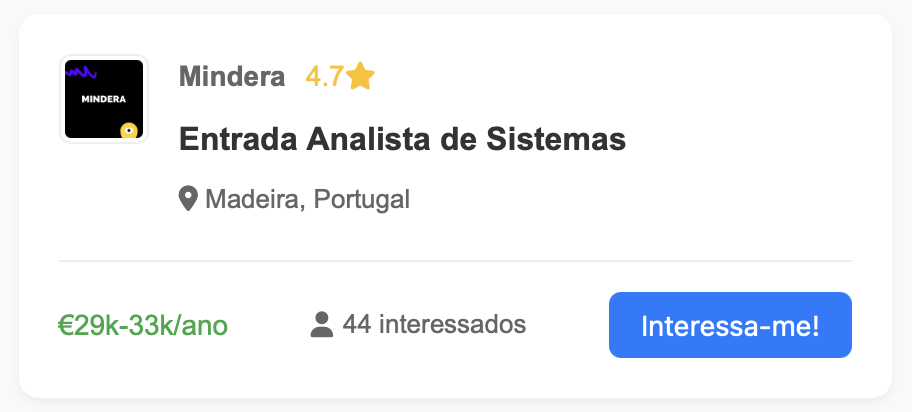

Página Inicial
Oportunidades
Interesses
Contactos
Sobre Nós
Login
Signup

Vá até à página de
Oportunidades
e clique no botão "Interessa-me!" nas vagas que lhe interessarem.
Interessa-me!
← Clique aqui nas vagas que gostar